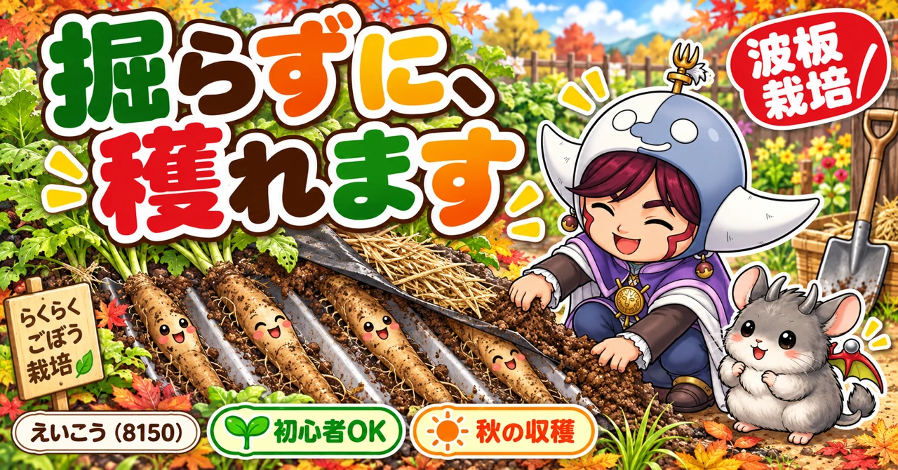
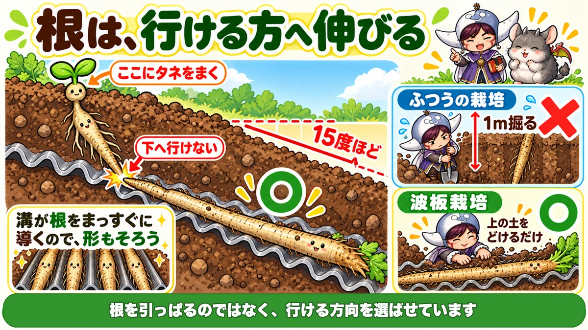
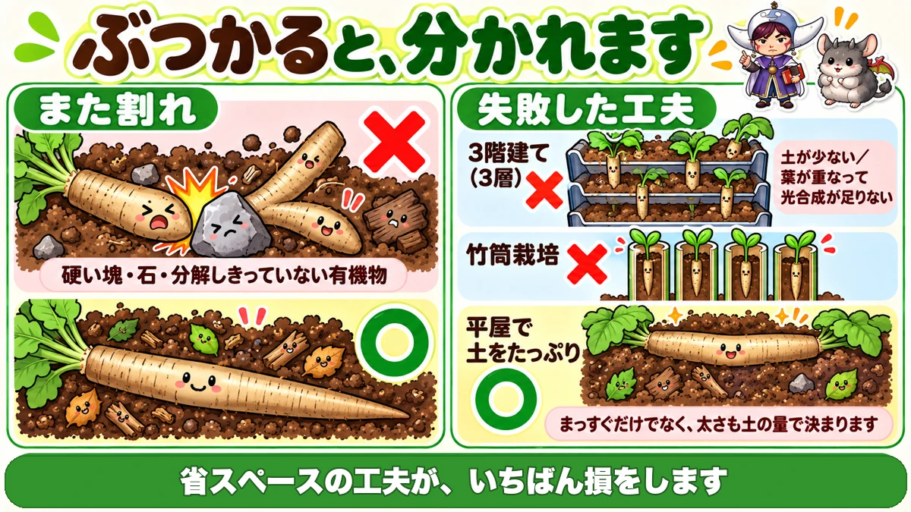
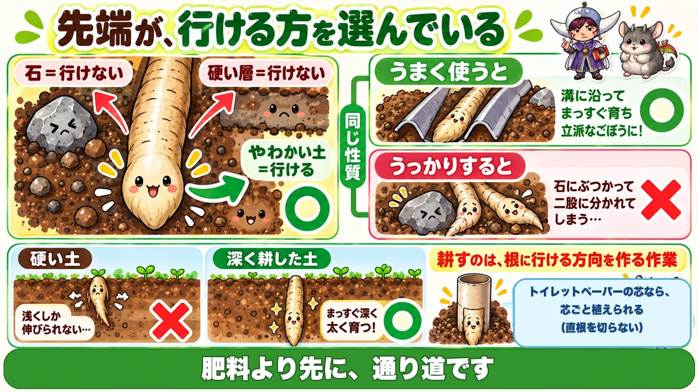

ごぼうは、掘らずに穫れます🌱 波板を1枚、斜めに敷くだけ

🌱「掘るのが大変そうで、手を出せない」
🌱「作ってみたけど、途中で折れて半分しか抜けなかった」
🌱「抜いたら、二股・三股に分かれていた」
どうも、8150（えいこう）です🌱 家庭菜園歴8年、理科の教員免許を持っていて、有機・無農薬で野菜を育てています。
前回はみょうがでした。今日はごぼうです。
ごぼうは家庭菜園でいちばん敬遠される野菜だと思います。理由ははっきりしています。
根が1m以上、まっすぐ下に伸びるからです。
深く耕さないと育たず、収穫は掘削作業になります。
でも、うまい手があります。
先に、この記事でいちばん言いたいことを言っておきますね。
波板を斜めに敷いて、その上で育てれば、掘らずに穫れます🌱
まず、ごぼうの基本データ
3つだけ押さえてください
- 科：キク科（春菊・レタスの仲間です）
- タネまき：春まき3〜4月／秋まき9月ごろ
- 収穫：春まきなら秋（10〜11月ごろ）
※時期は中間地（関東〜関西の平野部）が目安。寒い地域は少し遅らせ、暖かい地域は早めに。
株間は10cmほど
意外と狭くて大丈夫です。
根は下に伸びるので、横方向はそれほど場所を取りません。
品種は、長さで選びます
滝野川ごぼうのような長根種が、いわゆる「ごぼう」です。
1m近くになります。この記事は、この長いタイプの話です。
波板栽培のしくみ

やることは、単純です
手順はこれだけです。
- 地面に15度ほどの傾斜をつけて、土台にする
- その上に、波板を並べる
- 波板の上に、土を盛る
- 盛った山の頂上に、タネをまく
根が、進路変更します
ここが仕組みのおもしろいところです。
ごぼうの根は、まっすぐ真下に伸びようとします。
でも途中で波板にぶつかります。
下へ行けないので、波板の溝に沿って、斜め下へ伸びていきます。
だから、掘らなくていい
結果どうなるか。
ごぼうは、波板の上に横たわった状態で育ちます。
収穫のときは上の土をどけるだけです。
スコップで1m掘る、という作業がまるごと消えます。
溝が、まっすぐにします
もうひとつ効果があります。
波板の溝が、根をまっすぐに導いてくれます。
曲がったり分かれたりしにくく、形のそろったごぼうになります。
層を重ねると、失敗します
2階建て・3階建てにしたくなる
波板栽培は、横に場所を取ります。
だから「上に積み重ねれば省スペースだ」と考えたくなります。私も考えました。
細いものばかりになります
実際に3層でやると、細いごぼうばかりになります。
理由は2つあります。
- 1層あたりの土の量が少ない
- 葉が上下で重なって、光合成が足りない
平屋で、土をたっぷり
だから平屋がいいです。
場所は取りますが、土をたっぷり盛れます。
「省スペースの工夫」が、結局いちばん損をするという例ですね。
竹筒も、同じ理由でだめでした
似た工夫に、竹筒を立ててその中で育てる方法があります。
これも失敗します。筒に入る土の量が少なすぎるんです。
結果はひものような、細いごぼうになります。
共通しているのは
3つとも、原因は同じです。
土の量が足りない。
ごぼうは「まっすぐ」だけでなく「太さ」も土の量で決まります。ここはけちらないでください。
土の作り方と、また割れ

堆肥を多めに
盛る土は、畑の土そのままではなく堆肥を多めに混ぜてください。
理由は次に書きます。
また割れは、ぶつかった跡です
「抜いたら二股だった」という失敗があります。また割れ（岐根）といいます。
原因は単純です。
根の先が、硬いものにぶつかったからです。
- 土の中の硬い塊
- 石
- 分解しきっていない有機物
ぶつかった先で、根が2本に分かれます。
だから、ふかふかに
つまりまた割れを防ぐ方法は、障害物をなくすことです。
堆肥を多めに入れて、固まりにくい土にする。石は拾う。
未熟な堆肥は使わない。ここは前の記事でも書いたとおりです。
暑さ対策も、しておきます
盛った土は、薄いぶん乾きやすく、熱くなりやすいです。
対策はこうです。
- 防草シートをマルチ代わりに掛ける
- その上にわらを載せる（枯れ草でも構いません）
近年の夏は、これをやるかどうかで差が出ます。
苗は、芯ごと植えます
ごぼうは、移植を嫌います
タネまきの話です。
ごぼうは直根なので、植え替えを嫌います。
根を切ると、そこから分かれます。だから普通は畑に直まきします。
トイレットペーパーの芯を使う
でも、苗を作りたいときもありますよね。そこでこの方法です。
トイレットペーパーの芯を並べて、育苗ポットにする。
紙なので、そのまま土に植えられます。根を1本も切りません。
これは、うまい方法です
芯を並べて、底に新聞紙などを敷いて土を入れるだけです。
捨てるものが道具になります。
ごぼうは深い容器が要るので、細長い芯の形がちょうど合っています。
まき方
- ごぼうの種は発芽率が高いので、芽出しは不要です
- 1か所に4〜5粒
- 覆土は薄く
- 指で押さえて、種と土を密着させる
浅くまくのは、光が要る種だからです。しそや春菊と同じですね。
学ぶ：根は、行ける方へ伸びます🔬

なぜ、波板で曲がるのか
考えてみると、不思議ではないでしょうか。
なぜ根は、波板にぶつかったら横へ向かうのでしょう。
引き返してもいいし、板を押しのけようとしてもいいはずです。
根は、抵抗の少ない方へ進みます
答えはこうです。
根は、いちばん抵抗の少ない方向へ伸びます。
先端には、障害物に触れたことを感じ取る仕組みがあります。
そして行けない方向をやめて、行ける方向に切り替えます。
つまり、だまされています
波板栽培は、要するにこれを利用しています。
「下には行けない」という状況を作る。
すると根は「では横へ」と判断します。
根を引っぱっているのではなく、選ばせているんですね。
また割れも、同じ現象です
そしてまた割れも、まったく同じ仕組みです。
石にぶつかる → 行けないので、別方向へ
ただし根の先は1本しかありません。だから左右に分かれた枝がそれぞれ太って、二股になります。
同じ性質が、うまく使えば波板栽培になり、うっかりすると また割れになる。
土を耕す意味
ここまで来ると、「土を深く耕す」という作業の意味も見えてきます。
根に、行ける方向を作ってあげる作業なんですね。
肥料をやるより先に、通り道を作る。根菜がうまくいかないときは、たいていここです☺️
まとめ
ここまで読んでくださって、ありがとうございます！
- ごぼうはキク科。春菊・レタスの仲間
- タネまきは春3〜4月か、秋9月ごろ
- 株間は10cmほどでよい
- 根は1m以上まっすぐ下に伸びる
- 波板を15度の傾斜で敷き、上に土を盛る
- 盛った山の頂上にタネをまく
- 根は波板に当たり、溝に沿って斜めに伸びる
- 収穫は土をどけるだけ
- 溝が根をまっすぐに導いてくれる
- 3層に積むと、細いごぼうになる
- 竹筒も土が足りず失敗する
- 平屋で土をたっぷり盛る
- 盛る土は堆肥を多めに
- また割れの原因は、硬い塊・石・未熟な有機物
- 防草シート＋わらで、乾燥と地温を抑える
- 直根なので移植を嫌う
- トイレットペーパーの芯なら、芯ごと植えられる
- 発芽率は高いので芽出し不要。1か所4〜5粒
- 覆土は薄く、押さえて密着させる
- 根は、抵抗の少ない方向へ伸びる
全部やろうとしなくて大丈夫です。まずは波板を1枚、斜めに敷いてみてください。ごぼうが「掘る野菜」でなくなります🌱
次回は、間引きの話です。もったいないと思って遅らせると、なぜ全部小さくなるのかをお話しします🌱
くわ
深く耕すかどうかで、ごぼうの出来が決まります。短い品種なら家庭菜園でもいけます。
![[商品価格に関しましては、リンクが作成された時点と現時点で情報が変更されている場合がございます。]](https://hbb.afl.rakuten.co.jp/hgb/56d752c3.3ce6fd3b.56d752c4.f8896826/?me_id=1209220&item_id=10002030&pc=https%3A%2F%2Fthumbnail.image.rakuten.co.jp%2F%400_mall%2Fhonmamon-r%2Fcabinet%2Fimg3%2Fw4580149745643.jpg%3F_ex%3D240x240&s=240x240&t=picttext "[商品価格に関しましては、リンクが作成された時点と現時点で情報が変更されている場合がございます。]")

もみ殻くん炭
土をやわらかく保ちます。硬いと又根になります。
![[商品価格に関しましては、リンクが作成された時点と現時点で情報が変更されている場合がございます。]](https://hbb.afl.rakuten.co.jp/hgb/56bc30bc.01c5b89d.56bc30bd.ee310357/?me_id=1231595&item_id=10000412&pc=https%3A%2F%2Fthumbnail.image.rakuten.co.jp%2F%400_mall%2Fplanto-iwa%2Fcabinet%2F2707.jpg%3F_ex%3D240x240&s=240x240&t=picttext "[商品価格に関しましては、リンクが作成された時点と現時点で情報が変更されている場合がございます。]")
米袋
袋栽培という手もあります。深く掘らずに長いごぼうが穫れます。
![[商品価格に関しましては、リンクが作成された時点と現時点で情報が変更されている場合がございます。]](https://hbb.afl.rakuten.co.jp/hgb/56bc3119.f1f4196c.56bc311a.c9ac6e4e/?me_id=1215024&item_id=10001843&pc=https%3A%2F%2Fthumbnail.image.rakuten.co.jp%2F%400_mall%2Fkminori%2Fcabinet%2Fhozai%2Fimg57520728.jpg%3F_ex%3D240x240&s=240x240&t=picttext "[商品価格に関しましては、リンクが作成された時点と現時点で情報が変更されている場合がございます。]")
あわせて読みたい